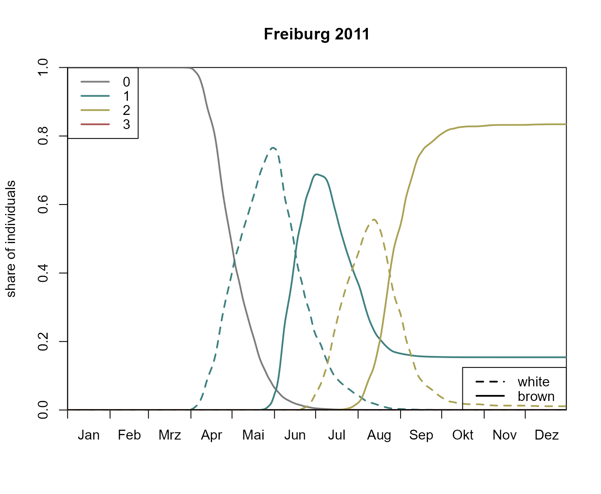

A stage diagram illustrates the share of individuals are in a specific developmental stage over time.
Usage
bso_plot_stage_diagram(
.pheno,
.station = prop_stations(.pheno)[1],
.stages = list("white", "brown"),
.lty = c("dashed", "solid"),
.lwd = 2,
.colors = barrks_colors("bso_stages"),
.labels = barrks_labels("bso_stages"),
.legend_col = TRUE,
.legend_lty = TRUE,
...
)Arguments
- .pheno
A BSO phenology (see
bso_phenology())- .station
Pass a character vector to choose a station assigned to
.phenoby its name, or pass a different station. Seestations_create()for details.- .stages
List of stages to plot. Elements will be passed to
bso_get_individuals_df(). Look there for more information.- .lty, .lwd
Vectors of line types or line widths that are used to plot the different stages. Should have the same length as
.stagesor 1.- .colors, .labels
Vectors of colors/labels starting from the hibernating generation followed consecutively by elements for the filial generations (not including sisterbroods).
- .legend_col, .legend_lty
Manipulate the appearance of the legends for colors and line types. Pass
TRUE/FALSEto enable/disable the respective legend. For the customization of the respective legend, a list of parameters for graphics::legend can be passed.- ...
arguments passed to
base::plot().
Examples
# \donttest{
# This may take a few minutes...
# calculate phenology
p <- bso_phenology('bso', barrks_data('stations'), .quiet = TRUE)
bso_plot_stage_diagram(p)

# }